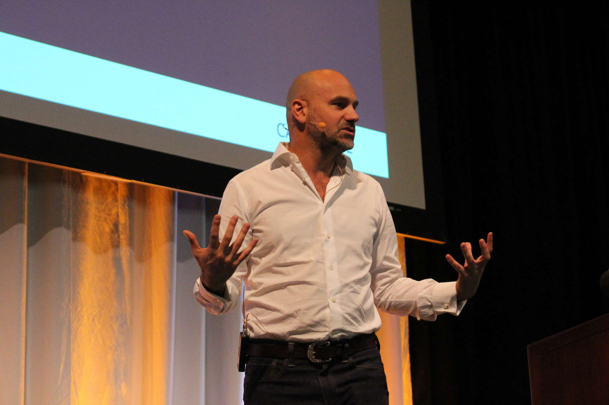

- Prénom NOM : Vincent JOBARD
- Surnom : Winael
- Blog : http://winael.github.io/
- Email : vinzjobard@ubuntu.com
- Wiki : https://wiki.ubuntu.com/Winael
Présentation
Les snaps, qu'est-ce que c'est ?
A l'origine...

- > Version 2.0 du paquet click développé pour l'univers mobile Ubuntu
- > Format de paquet conçu pour Snappy Ubuntu Core
- > D'abord sur le Cloud (décembre 2014)
- > Puis sur l'IoT (courant 2015)
A l'origine...

- > Mark Shuttleworth annonce l'arrivée des snaps sur les environnement classiques (Poste de travail, Server, ...) d'Ubuntu à partir de la 16.04 LTS
Et techniquement ?
Tarball en Squashfs :
- > Montée en lecture seule
- > Isolée dans un espace de nom au niveau du noyau
- > Processus filtrés avec Seccomp
- > Protégée par AppArmor
Mais pourquoi faire ?
Un paquet .snap pour le système Ubuntu Core contient toutes ses dépendances.
Avantage : un développeur peut s'assurer qu'il n'y a pas de régressions déclenchées par des changements sur le système en dessous de son application.
Snapcraft permet de regrouper ces dépendances facilement en vous permettant de les spécifier comme "parties" dans le fichier snapcraft.yaml.
Snapcraft
Les parties dans Snapcraft
Les « parties » constituent un aspect central des recettes Snapcraft. Une partie est un morceau de logiciel ou de données requis pour faire fonctionner le paquet snap ou construire une autre partie. Chaque partie est gérée par un plugin Snapcraft, et les parties sont généralement indépendantes les unes des autres.
Les plugins Snapcraft
Chaque « partie » a un plugin qui lui est associé fournissanr le mécanisme permettant de la manipuler. Il existe une variété de plugins déjà inclus pour des projets basés sur Python 2 et 3, Go, Java, Cmake ou autotools. (Plus de détails prochainement)
L'interface des snaps
Une interface de snap donne à un snap la possibilité d'utiliser des ressources fournies par une autre snap, incluant la snap du système d'exploitation (Ubuntu-core étant lui même un snap).
Le workflow de Snapcraft
-
> Récupération des sources (« Pull »)
Première étape. Récupération du contenu depuis un dépôt git ou téléchargement de binaire.
Le contenu de chaque partie sera stocké dans le répertoire
parts/<part-name>/src -
> Construction des parties (« Build »)
Cette étape fait suite à l'étape de « Récupération des sources ». Chaque partie est construite dans son répertoire
parts/<part-name>/buildet s'installe dans son répertoireparts/<part-name>/install
Le workflow de Snapcraft
-
> Etape de transit (« Stage »)
Après l'étape de construction de chaque partie, les partie sont combinées en une seule arborescence de répertoires que l'on appelle «zone de transit» qui se trouve dans le répertoire
./stage.C'est la zone où toutes les parties peuvent partager des actifs tels que des librairies.
-
> Dépouillement du snap (« Strip »)
L'étape de dépuillement déplace les données dans le répertoire
./snapqui ne contient que le contenu qui sera mis dans le paquet sanp final, contrairement à la zone de transit qui peut inclure des fichiers de développement non destinés au paquet.Les informations de métadonnées Snappy de votre projet seront aussi placées dans
./snap/meta.Ce répertoire
./snapest utile pour inspecter ce qui se passe dans votre application snap et de faire des post-traitements finaux sur la sortie du snapcraft.
Le workflow de Snapcraft
-
> Construction du paquet snap (« Snap »)
La dernière étape construit le paquet snap à l'extérieur du répertoire du snap.
Chaque étape du workflow peut être simulée en la précisant en argument de Snapcraft :
$ snapcraft pull
$ snapcraft build
$ snapcraft stage
$ snapcraft strip
$ snapcraft snap
Prochain episode :
Epidode 2 :
- Etude du fichier snapcraft.yaml du snap youtube-downloader -